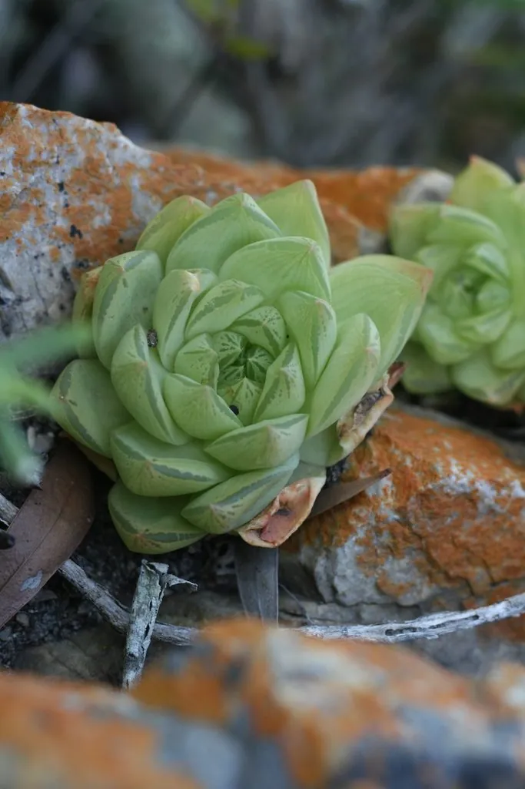

多肉植物 · 植物界
宝草 Haworthia cymbiformis

阿福花科瓦苇属多肉，叶片淡绿色、半透明，莲座紧凑如小船，原产南非，是容易群生、适合新手的瓦苇属植物。
- 分类
- 门被子植物门纲单子叶植物纲目天门冬目科阿福花科属瓦苇属
- 栖息环境
- 南非东开普省干旱地区的岩缝与灌丛下
- 地理分布
- 原产南非东开普省，世界各地盆栽观赏
- 保护级别
- 暂无评估
物种志
宝草为阿福花科瓦苇属的多年生肉质草本，叶片卵形或舟形，长 3–5 厘米，先端渐尖，叶面淡绿色，顶端半透明，窗面有淡色纵纹。叶片排列成紧凑的莲座状，直径 6–10 厘米，基部容易萌生侧芽，形成群生株。花梗自叶腋抽出，花小、白色带绿条纹，花期春季；果实为蒴果。
宝草原产南非东开普省的干旱地区，喜半阴、温暖干燥和通风良好的环境，耐旱、怕强光暴晒和积水。它叶色淡绿、窗面通透，莲座形似小船，容易群生，是瓦苇属中最适合新手栽培的种类之一。栽培用颗粒土，生长期保持微润，夏季遮阴，冬季控水并保持 8℃ 以上；繁殖以分株为主，将侧芽掰下另栽即可。
形态与习性
- 冠幅莲座直径 6–10 厘米
- 叶片卵形或舟形，淡绿色、半透明
- 花期春季，花小、白色带绿条纹
- 光照喜半阴散射光
- 水分耐旱，生长期保持微润
- 土壤疏松透气的颗粒土
- 繁殖分株为主
- 特点容易群生，适合新手
趣味知识
- 宝草叶片先端半透明，形似小船，因此种加词意为“舟形”。
- 它容易在基部萌生侧芽，很快就能长成一群。
- 宝草耐阴，适合放在室内明亮的散射光处。